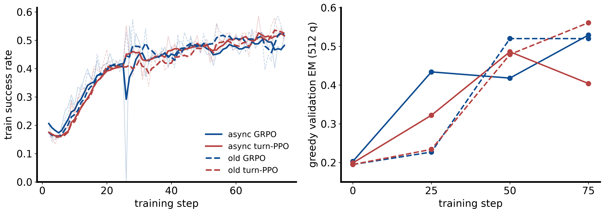
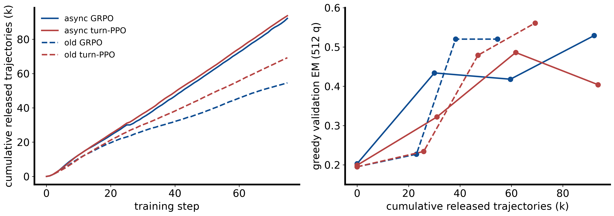
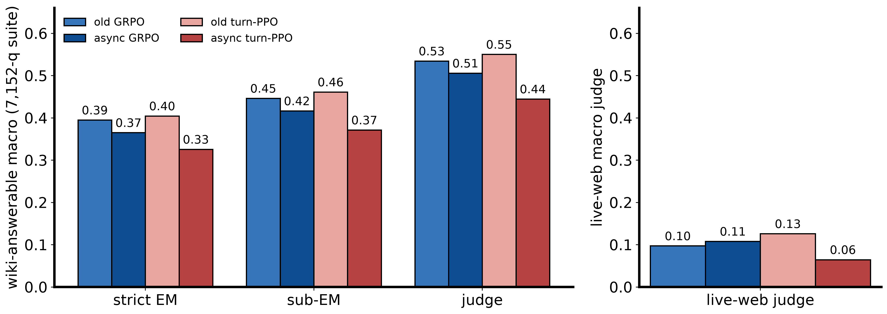
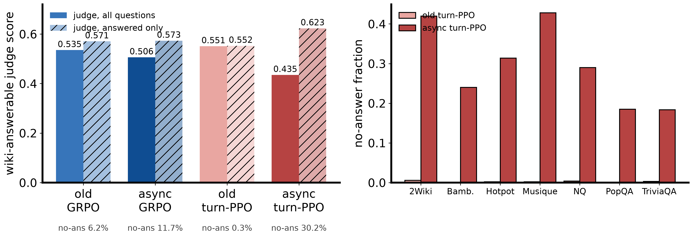
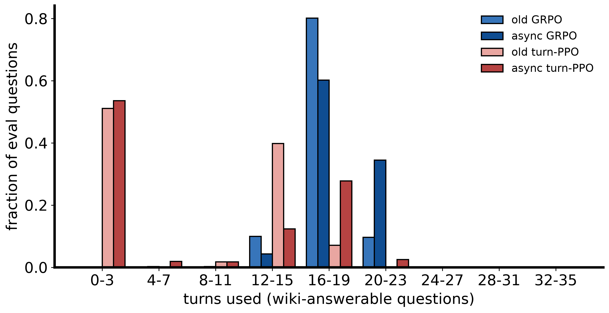
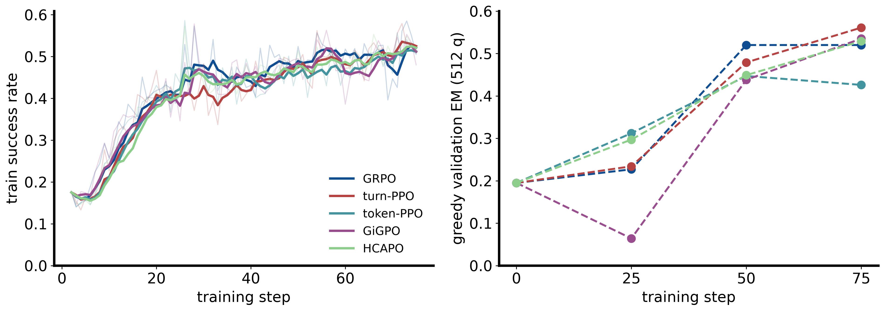

max_age drops in both engines, all arms, all 75 steps). Prime suspect for the late regression (async tPPO val 0.486 → 0.404 over steps 50–75): the critic × partial-rollout-resume interaction.
old GRPOold turn-PPO
async GRPOasync turn-PPO
Both engines ran identical partial-rollout config (cycle 8 / max_age 4); the async arms
(async75kv60) add trajectory-level concurrency over vLLM V1 AsyncLLM engines
with uid-atomic group release, gpu_util 0.60, sticky routing. Val = greedy strict EM on
512 held-out questions, reproducibility ±0.02.
| arm | engine | val@0 | val@25 | val@50 | val@75 |
|---|---|---|---|---|---|
| old GRPO | lockstep | 0.195 | 0.227 | 0.520 | 0.520 |
| old turn-PPO | lockstep | 0.195 | 0.234 | 0.479 | 0.561 |
| async GRPO | async | 0.203 | 0.434 | 0.418 | 0.529 |
| async turn-PPO | async | 0.199 | 0.322 | 0.486 | 0.404 |
| metric | sync | async | ratio |
|---|---|---|---|
| phase wall-clock (3 steps + val + ckpt) | 8,953 s | 4,454 s | 2.01× |
| rollout generation, 3-step total | 4,890 s | 1,228 s | ~3–4× |
| zombie generated tokens | 49.6% | 0 | — |
| released trajectories (3 steps) | 2,300 | 2,695 | 1.17× |
| val@3 (greedy, 512 q) | 0.264 | 0.244 | ±0.02 band |
Steady state H100 @0.65 util: 6,473 gen tok/s, 174 traj/min, TTFT p50 15.5 s, TPOT 36 ms. B200 measured 0.88× H100 on rollout despite 2.87× KV (TRITON_ATTN decode 1.6× slower per token) — H100 remains the rollout node.
max_age stale-group drops were
zero in both engines across all 75 steps of all four arms — stale censoring is
not a mechanism of any observed difference. The operative data-side differences are:
(1) release volume — async releases 1,200–1,700 traj/step vs 690–1,150 (cumulative 92–94k
vs 55–69k over 75 steps) because the old engine's fixed batch geometry drops surplus completed groups;
(2) completion mix — continuous slot backfill keeps long trajectories lockstep cycles would
truncate or never collect; (3) fresher resumes — paused trajectories resume immediately rather
than at the next 8-turn cycle; (4) fp16 engine numerics (token ids byte-exact by construction).
By step, async arms reach val 0.32–0.43 by step 25 while the old arms sit at ~0.23. (Dips near step 26 in the train curves are pod-reclaim/OOM resume replays, not learning events.)

Re-indexing the same val points by cumulative released trajectories makes the async advantage disappear: old GRPO reaches 0.520 by ~38k trajectories; async GRPO needs ~92k to reach 0.529. Old turn-PPO reaches 0.561 at 69k; async turn-PPO peaks at 0.486 (61k) and falls to 0.404 at 94k. The per-step advantage is a data-rate effect — more trajectories per update at identical optimizer settings — with per-sample efficiency mildly worse.

7,152-question ASearcher suite; wiki-answerable macro over 7 benchmarks (6,115 q), live-web trio (GAIA / frames / xbench-deepsearch, 1,027 q) reported separately as a corpus-gap measure. Judge ≈ EM + 0.13 one-directional; all three scorers agree on the ranking.
| arm | judge | strict EM | sub-EM | live-web judge | no-answer |
|---|---|---|---|---|---|
| old turn-PPO | 0.550 | 0.405 | 0.461 | 0.126 | 0.3% |
| old GRPO | 0.535 | 0.395 | 0.446 | 0.097 | 6.2% |
| async GRPO | 0.506 | 0.365 | 0.416 | 0.108 | 11.7% |
| async turn-PPO | 0.445 | 0.326 | 0.371 | 0.065 | 30.2% |

| arm | judge (all) | judge (answered) | no-answer | mean turns | median |
|---|---|---|---|---|---|
| old GRPO | 0.535 | 0.571 | 6.2% | 17.5 | 18 |
| async GRPO | 0.506 | 0.573 | 11.7% | 18.7 | 19 |
| old turn-PPO | 0.551 | 0.552 | 0.3% | 7.8 | 3 |
| async turn-PPO | 0.435 | 0.623 | 30.2% | 8.5 | 3 |
ctx_terminate — the policy searches until the 16k window fills without
committing to an answer. No-answer concentrates on multihop (Musique 43%, 2Wiki 42%, Hotpot 31%
vs TriviaQA/PopQA ~19%).

Same protocol and lockstep engine (fast75). GRPO and turn-PPO finished 2026-08-02.
The token-PPO / GiGPO / HCAPO arms (started 2026-08-03) died with their pods at steps 42/44/46
with only the step-25 checkpoint retained, were resumed from step 25 on 2026-08-14
on identical code (only change: checkpoint every 5 steps), and completed 2026-08-15/16.
Resume fidelity: each restart re-val@25 reproduced its original value exactly (0.312 / 0.064 / 0.297).
| estimator | mechanism | val@0 | val@25 | val@50 | val@75 | turns@75 |
|---|---|---|---|---|---|---|
| turn-PPO (b0) | turn-level GAE + critic | 0.195 | 0.234 | 0.479 | 0.561 | 7.5 |
| GiGPO | anchor-state + episode groups | 0.195 | 0.064 | 0.438 | 0.535 | 16.1 |
| HCAPO | hindsight answer-cond., γ=0.95 | 0.195 | 0.297 | 0.449 | 0.529 | 3.7 |
| GRPO | token-level group-relative | 0.195 | 0.227 | 0.520 | 0.520 | 17.0 |
| token-PPO | stock token GAE + critic | 0.195 | 0.312 | 0.447 | 0.426 | 8.4 |

Adopt the async collector for what it is — a 2× wall-clock engine with clean semantics (atomic groups, zero zombie generation, val parity at profile scale). Do not yet adopt it as the training default: its data distribution (more, longer, fresher-resumed trajectories) pushes policies toward non-committal search — mildly for GRPO, severely for critic-based turn-PPO. Fix order: (1) staleness/IS correction at the resume seam; (2) answer-commitment shaping or no-answer penalty; (3) re-run the turn-PPO arm. The sample-matched curves here are the baseline any fix must beat.
# rebuild everything in this folder (venv: /home/tiger/xiaoxuan/envs/agentic-rl-ca)
python mine_campaign_data.py # per-step series for all 7 runs -> campaign_data.json
python analyze_items.py # per-item turns / no-answer / conditional -> items_analysis.json
python make_figures.py # 6 figures -> assets/
~/.local/bin/tectonic async_campaign_final.tex # paper PDFJudge summaries: ~/xiaoxuan/arlca-8b/outputs/judge/{agrpo,atppo,grpo,turnppo}_s75.summary.{md,json} ·
Eval dumps: HDFS .../logs/p8b_eval_*_s75/ ·
Checkpoints: HDFS .../checkpoints/{token_grpo,turn_ppo_b0}_..._{fast75,async75kv60}_s0/global_step_75 ·
wandb rainyfields/ca-rung3-8b-asearcher (async zkdy7cw7 / g2lwspq4; old uabse4uv+vgoq421c / odkf1zmj)